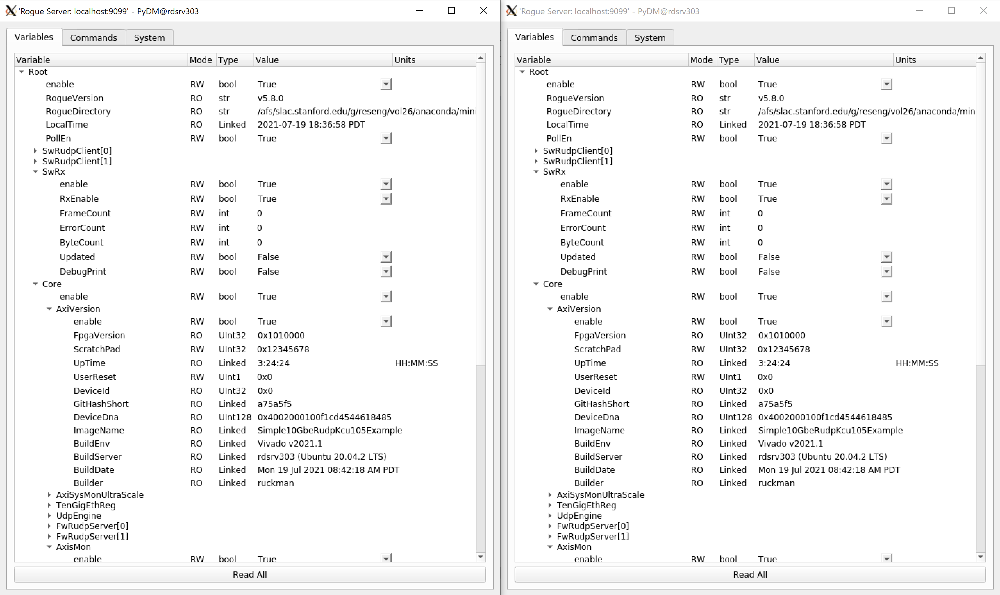
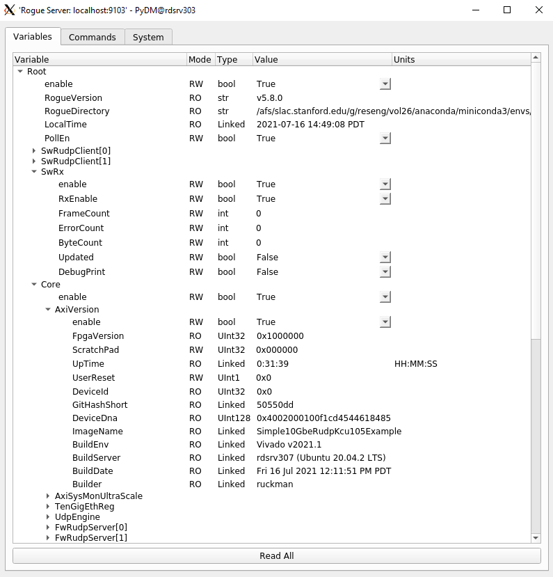

How to run multiple GUI clients on the same KCU105 server
The SURF’s RUDP connection only support 1 “physical” client/server connection. If you need more than 1 software client to access the hardware server, then you can use ZeroMQ for multiple “virtual” connections to the hardware.
This means that you can run multiple devGui.py scripts
at the same time (refer to How to run the Software Development GUI with KCU105 Hardware) because the PyDM GUI does NOT access the hardware directly, but uses a ZeroMQ to manage asynchronous I/O from
multiple clients and manage the hardware access.
How to get access with another client if PyDM GUI is already opened
Setup rogue software (refer to Rogue Software Setup)
Run the ZmqClientGui python script to get access to the devGui’s script ZMQ server
$ cd Simple-10GbE-RUDP-KCU105-Example/software $ python scripts/zmqClientGui.py
{kind=link}
How to create a ZMQ server without PyDM GUI in one terminal and ZMQ client with PyDM in another terminal
For the first terminal:
Setup rogue software (refer to Rogue Software Setup)
Run the Development GUI python script
--guiType Noneargument$ cd Simple-10GbE-RUDP-KCU105-Example/software $ python scripts/devGui.py --guiType None
For the second terminal:
Run the ZmqClientGui python script to get access to the ZMQ server without a GUI running
$ cd Simple-10GbE-RUDP-KCU105-Example/software $ python scripts/zmqClientGui.py
{kind=link}